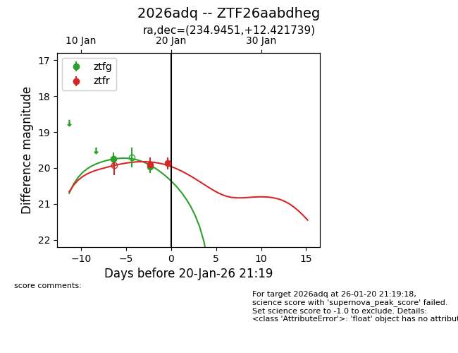
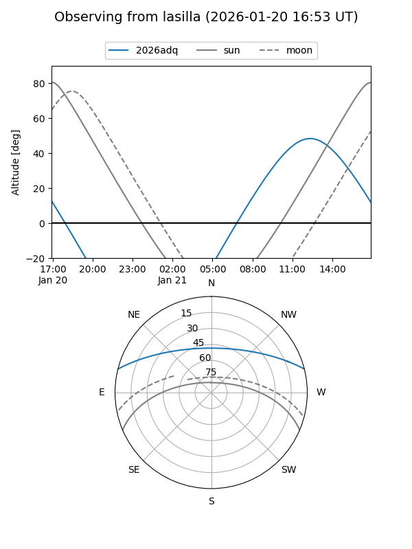
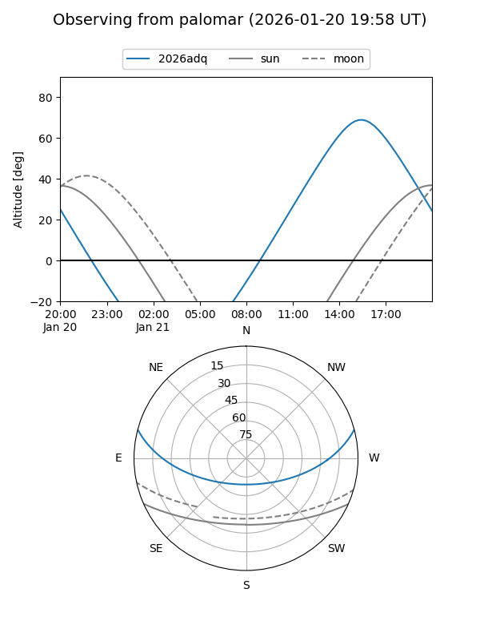
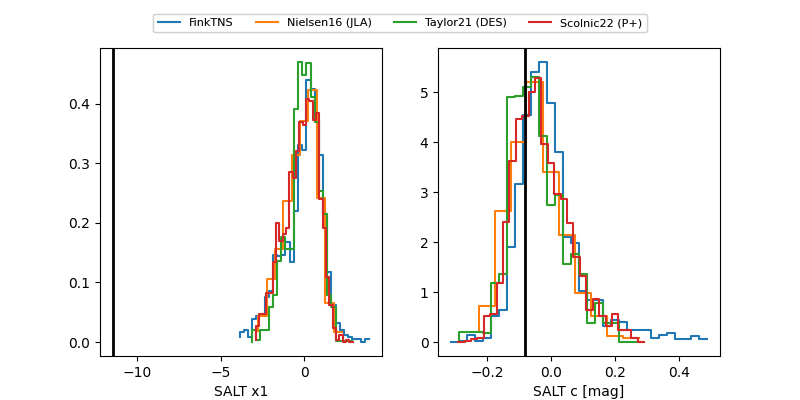

2026adq
Target 2026adq at 2026-01-25 11:31
Aliases and brokers:
FINK: link
Lasair: link
ALeRCE: link
TNS: link
YSE: link
alt names
ZTF26aabdheg (ztf,fink_ztf)
2026adq (tns,yse)
Coordinates:
equatorial (ra, dec) = 234.9451,+12.42174
equatorial (HMS+DMS) = 15:39:46.83,+12:25:18.26
galactic (l, b) = (20.9392,+47.99805)
Flags:
Photometry:
last ztfg=19.95, ztfr=19.51
2 ztfg, 3 ztfr detections
Lightcurve

Visibility


Additional plots
